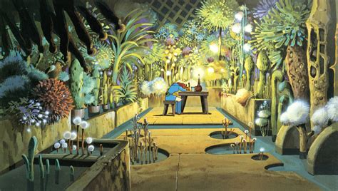
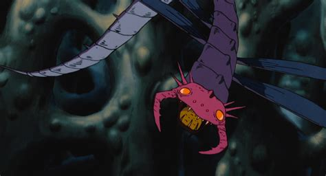
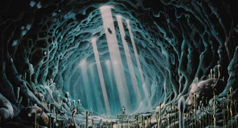
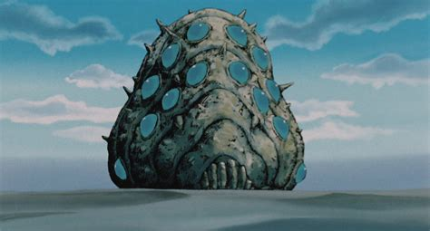
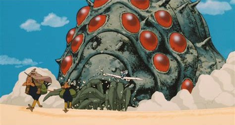
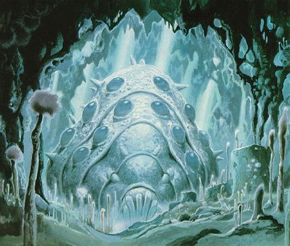
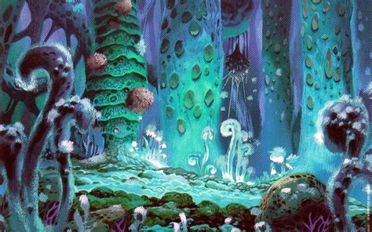

Decided to rewatch a classic. Nausicaä of the Valley of the Wind (1984).
Probably not a surprise that I enjoy this movie an unreasonable amount. I mean...
  And obviously...
  The Ohmu, man. Fucking love those guys.
If these giant trilobite-ispod things were real, I'd be so happy. They're like the whales of the Sea of Decay. To be perfectly honest I'd still enjoy this movie if there was no plot and it was just forest and cool giant bugs going about their business for the entirety of the just under 2 hour runtime.
The Sea of Decay is beautiful, even if it's toxic to human life. Stunning painted backgrounds throughout the film make this all the more apparent. It's rare that worldbuilding includes such vividly imagined exploration of invertebrates and fungi. Much less as something noble or one that fulfills a vital role in the world and isn't an enemy or a pest to be wiped out.
I won't go into analysis here, but the usual themes are all strongly represented:
Respect for life and the natural world. Choosing compassion and understanding over greed and fear. War only leading to more trauma, suffering, and death. Nuclear weapons not being worth the long term devastation they create. Survival and endurance under oppression and hardship. What it means to be a leader. What it means to take responsibility for harm caused. Humans being part of a much larger system of nature.
It's very much a Ghibli movie, and very much a Hayao Miyazaki Ghibli movie. The film is as much a love letter to aviation as it is to fantastic creatures and gorgeous natural environments. In the past, I didn't pay much attention to the different kinds of aircraft in the movie. But having done quite a bit of work-related research into aviation history recently, the types of aircraft were much more apparent, and so were the ways they fail in flight. I'd be super curious if anyone happens to know of any sources or even speculation as to the real life influences on the aircraft designs, whether for the film or the original manga.
In the meantime, though, I've got giant pill bugs to think about.